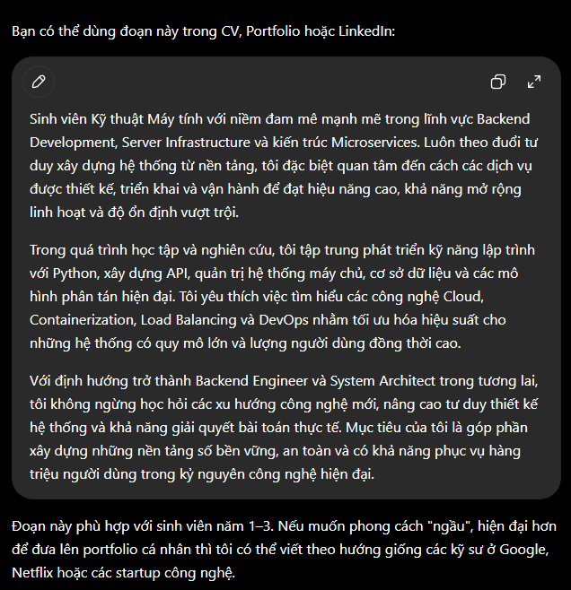
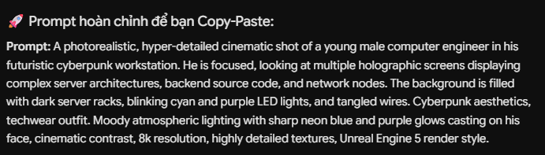

Mục tiêu nghiên cứu & Thử nghiệm
Thực hành làm chủ và thực thi kỹ nghệ phối hợp chéo cấu trúc giữa các nền tảng trí tuệ nhân tạo (Cross-platform Prompting). Thử nghiệm khai thác đồng bộ năng lực của 3 mô hình ngôn ngữ lớn hàng đầu nhằm tối ưu hóa chuỗi quy trình xuất bản nội dung văn bản học thuật và thiết kế tài nguyên số cho Portfolio cá nhân.
Quy trình phối hợp đa nền tảng (Cross-Platform Pipeline)
Tiến trình xử lý dữ liệu liên tục tuần tự theo trục dọc hệ thống:
ChatGPT (OpenAI)

Gemini (Google)

Microsoft Copilot (DALL-E 3)
Ma trận đánh giá và So sánh hiệu năng AI
| Tiêu chí so sánh | ChatGPT (OpenAI) | Gemini (Google) | Microsoft Copilot |
|---|---|---|---|
| Thế mạnh cốt lõi | Tư duy ngữ cảnh logic vượt trội, cấu trúc văn bản chuẩn mực, hành văn mượt mà. | Tra cứu dữ liệu thời gian thực xuất sắc, phân tích thông số, tối ưu hóa từ khóa kỹ thuật. | Đa nhiệm tốt, tích hợp sâu hệ sinh thái, tạo ảnh đồ họa chất lượng cao trực tiếp. |
| Đầu ra văn bản | Độ sâu học thuật cao, dễ dàng tùy biến linh hoạt theo định hướng yêu cầu. | Cấu trúc rõ ràng, mang tính cập nhật xu hướng mới, phân tách bullet-point khoa học. | Ngắn gọn, cô đọng, tập trung trực tiếp giải quyết vào giải pháp thực thi cấu trúc. |
| Tác vụ đồ họa | Giới hạn ở phiên bản miễn phí, cần cấu trúc câu lệnh mô tả gián tiếp. | Hỗ trợ kết xuất hình ảnh ở mức cơ bản, độ bám sát chi tiết tham số kỹ thuật cần cải thiện. | Cực kỳ mạnh mẽ nhờ DALL-E 3 nhúng sẵn, xử lý ánh sáng đổ bóng không gian rất sâu. |
Bài học kinh nghiệm & Tư duy thiết kế chuỗi
Nguyên lý phối hợp vạn năng: Bản chất của các mô hình trí tuệ nhân tạo tạo sinh hiện nay là không có mô hình nào độc tôn hoàn hảo. Năng lực cốt lõi của một sinh viên công nghệ là khả năng nhìn nhận ra thế mạnh riêng biệt của từng công cụ để tổ chức phân luồng công việc: Khởi tạo ý tưởng bằng ChatGPT, chuẩn hóa tối ưu hóa bằng Gemini, và thực thi đồ họa hóa bằng Copilot.
Kết luận thực hành
Quá trình nghiên cứu và ứng dụng linh hoạt bộ ba AI tạo sinh giúp nâng cao hiệu suất làm việc lên gấp nhiều lần. Việc làm chủ tư duy thiết kế cấu trúc prompt không chỉ phục vụ xây dựng nội dung, tài nguyên hình ảnh đồng bộ cho Portfolio, mà còn củng cố vững chắc kỹ năng tư duy hệ thống và làm chủ các công cụ chuyển đổi số thế hệ mới.